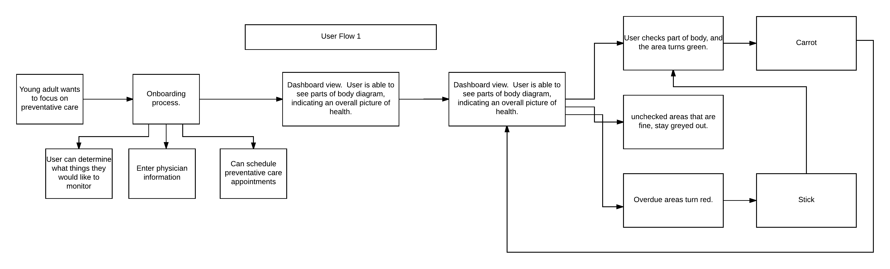

Concept Statement
Providing a clear visual representation of a user’s health will motivate them to make healthier choices.
Purpose of Prototype
The purpose of my prototype is to determine which visual indicators of health information most effectively engage users.
Research Summary
Domain Diagram
In order to refocus on my project, I began the week by redoing my domain diagrams.
After completing this diagram I realized that it was too horizontal, and that I needed to develop subdomains in order to figure out where my project truly sat.
My second diagram placed patient monitoring, adherence, and access to healcare on the same level. After some critical thought I realized that the problem of patient adherence really sits within access healthcare and healthcare literacy. My project really falls into the space of young adult behavior within these two domains. My third domain map positioned my project in a much clearer space.
User Research
After conducting user and target market research last week, I realized what was missing with my concept. Users ultimelty need a program that provides them with motivation, either intrinsic or extrinsic, to keep participating. In order to help me layout my thoughts I generated my two user flows.

User Scenarios
In order to help myself imagine a solution that would fit my target audience, I created several user personas.
User Scenario Pair 1
- Name: Lucas Mccormick
- Age: 18
- Environment: Lucas goes to a public high school in the suburbs of Atlanta.
- Mentality: Lucas is interested in as doing as little as possible before he heads off to UMichigan. His main pastime is drinking and playing pool in his friend Mike’s basement.
- Motivations: Lucas plans on playing baseball at UMichigan and wants to make sure he is healthy enough. Lucas also doesn’t want to put in any extra effort.
- External factors affecting use: Lucas is receiving a lot of pressure from his mom and baseball couch to start taking responsibility for himself, as they wont be at school with him next year.
- Name: Georgia McCormick
- Environment: Georgia is a stay home mom in the suburbs of Atlanta.
- Age: 38
- Mentality:Georgia has a busy schedule making sure her three children get to all of their activities. With all three kids participating in multiple after school activities., Georgia is overwhelmed trying to make sure everyone has what they need.
- Motivations: Georgia wants to make sure that Lucas will be fine when he goes off to school in the fall. He often gets sick and doesn’t change his habits, and forgets to tell her when he needs immunizations for school. Georgia knows she needs to let go, but doesn’t feel like she can until Lucas shows that he is ready.
- External factors affecting use: Georgia’s husband travels frequently for work, and she needs an easier way to manage her children.
User Scenario Pair 2
- Name: Emily Jackson
- Age: 22
- Environment: Apartment off campus.
- Mentality: Emily is graduating from college in a few weeks, and beginning a consulting job at Deloitte. She is ready to take control of her own health management.
- Motivations: Emily’s mom would like her to get her own health insurance. Additionally, one of Emily’s room mates was diagnosed with diabetes this year. After watching her medical struggles Emily would like to be more proactive about her own preventative health.
- External factors affecting use: Emily is pretty busy wrapping up her studies, as well as adjusting to life in Boston all on her own. Emily has also started dating someone knew, and seems to have a lot less free time to dedicate to herself.
- Name: Arlene Davis
- Age: 45
- Environment: Arlene lives in upstate Michigan and works as a real estate agent.
- Mentality: Arlene loves Emily, but feels like she had her way too young. She knows she didn’t prepare Emily well to have knowledge about her own health, and with her real estate business finally taking off she really doesn’t have the time to dedicate to Emily now.
- Motivations: Arlene would like to have as little responsibility for Emily as possible.
- External factors affecting use: Extremely busy with business.
User Scenario Pair 3
- Name: Anne Potter
- Age: 20
- Environment: Anne is a sophomore in college at UCLA. She lives on campus, but is still covered by her father’s health insurance. Anne is part of a sorority and spends most of her free time training for half marathons.
- Mentality: Anne knows that her health is important for her hobby, but really isn’t comfortable seeking her father’s advice on healthcare topics. Anne used to discuss this with her mom before she passed away in a car accident a few years ago.
- Motivations: Find ways to learn more about her health, and what to do when something doesn’t feel quite right. Anne also wants to focus on preventative care, since her mother’s death made her keenly aware of the fragility of life.
- External factors affecting use: Anne wants to use something friendly, which is isn’t embarrassing to use since her living situation doesn’t give her much privacy.
- Name: Edwin Potter
- Age: 57
- Environment: Edwin works as a tax attorney in Chicago. He works long hours but is always available for Anne.
- Mentality: Edwin believes that health is really important, but really doesn’t know much about preventative health, or health care for young adults. Edwin is happy to give Anne independence but also knows that she is inexperienced and has a very busy schedule.
- Motivations: Edwin really wants to stay involved in Anne’s life and make sure that she is okay, but knows that Anne’s mother used to take care of her healthcare.
- External factors affecting use: Anne’s desire for independence as well as his lack of knowledge of women’s health.
Color Palette User Testing
After analyzing the results of my color palette user testing, I settled on a color palette which includes colors that attract young adults, as well as instill feelings of health, prosperity, and professionalism.
Prototype
Onboarding
Iteration 1
screen 1
screen 2
screen 3
screen 4
Iteration 2
screen 1
screen 2
screen 3
screen 4
Iteration 3
screen 1
screen 2
screen 3

screen 4
Iteration 4
screen 1
screen 2
screen 3
screen 4
Iteration 5
screen 1
screen 2
Iteration 6
screen 1
screen 2
Iteration 7
screen 1
screen 2
User Testing Results
Users were presented with all four iterations. Each user was asked to explain what the color indications on the body meant and how it made them feel.
- Red and green colors together make it difficult to understand the meaning
- Body outlines with actual defined parts (heart, intestines, are disconcerting)
- Green filling up the body would be more clear with a percentage marked
- Exterinsic incentives such as financial gain would help generate initial excitement
Possible Incentive Systems
- Financial incentives- parents give incentives to young adults to encourage them to be independant
- Health score based of preventative care measures gives discounts on insurance premiums
- Partnering with universities to give discounts on student health insurance
- Social sharing- users will feel incentives to participate to maintain a good image
Prototype Critique
- While the prototype was great for figuring out what visual elements convey health fulfilment, it didnt clarify the incentive system
- Didn't address helping users know which parts of their body needed to be checked